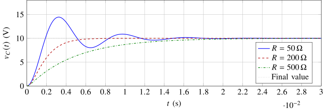
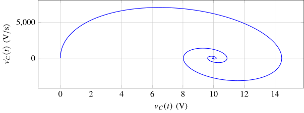
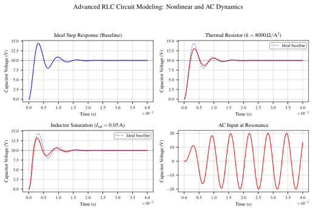

Exploring the Use of Differential Equations in Electric Circuits
Aneesh Pradhan
*A. Pradhan is with the Department of Mathematics, California State University, East Bay, Hayward, CA, USA.†Prepared for MATH 285 under the supervision of Prof. Matea Santiago.
Abstract We derive and analyze ordinary differential equations (ODEs) governing series RLC circuits to show how resistance controls damping and stability. First-order ODEs governing simplified RC and RL sub-circuits, as well as the second-order ODE describing the full RLC system, are derived and solved analytically for all three configurations, and the role of resistance in controlling circuit damping is examined by varying component parameters. The ideal model is then extended numerically to include current-dependent resistor heating, inductor saturation, and resonant AC forcing. These nonlinear extensions are phenomenological models chosen to illustrate how stress-dependent component behavior can alter transient damping. Our central research question asks: How do resistors influence the damping and stability of series RLC circuits as described by ODEs, and what are the practical implications for engineering applications such as filters and oscillators? The analysis identifies resistance as the parameter that governs whether the circuit is overdamped, critically damped, or underdamped, while the numerical results show how non-ideal components can suppress, shift, or amplify transient oscillations.
Index Terms series RLC circuit, ordinary differential equations, damping, Kirchhoff’s Voltage Law, stability analysis, nonlinear simulation, signal processing.
NOMENCLATURE
\(R\) Series resistance, measured in \(\Omega \). \(L\) Series inductance, measured in H. \(C\) Series capacitance, measured in F. \(V(t)\) Applied source voltage. \(\Vs \) Step-source amplitude. \(\vC (t)\) Capacitor voltage, the primary output variable. \(\dot {v}_C(t)\) Time derivative of capacitor voltage, \(dv_C/dt\), measured in V/s. \(i(t)\) Series current through the resistor, inductor, and capacitor. \(\alpha \) Damping coefficient, \(\alpha = R/(2L)\). \(\omega _0\) Undamped natural frequency, \(\omega _0 = 1/\sqrt {LC}\). \(\omega _d\) Damped natural frequency for the underdamped case. \(\Rcrit \) Critical resistance, \(\Rcrit = 2\sqrt {L/C}\). \(R_0\) Nominal resistance used in the non-ideal simulation. \(L_0\) Nominal inductance used in the non-ideal simulation. \(k\) Heating coefficient in the current-dependent resistance model, measured in \(\Omega /\mathrm {A}^2\). \(I_{\mathrm {sat}}\) Saturation current threshold for the inductor model. \(y_1,y_2\) State variables used in the numerical simulation.
The dynamic behavior of such circuits is naturally captured by ordinary differential equations (ODEs). Simpler RC and RL sub-circuits obey first-order ODEs, while the complete RLC system requires a second-order ODE to describe the interplay between energy stored in the inductor’s magnetic field and the capacitor’s electric field. Understanding the transition from first- to second-order models clarifies why the resistor plays an indispensable role: it is the only purely dissipative element in the circuit.
Our scientific question is: How do resistors influence the damping and stability of series RLC circuits as described by ODEs, and what are the practical implications in engineering applications?
This paper answers that question through a two-part approach: first by deriving ideal analytic solutions for RC, RL, and RLC circuits, and second by comparing those ideal responses with numerical simulations that include phenomenological non-ideal resistor and inductor behavior.
The remainder of this paper is structured as follows. Section II introduces the circuit configuration and the governing physical principles. Section III details the derivation of the governing equations, identification of variables and parameters, and the analytic solutions for each circuit type. Section IV presents results from varying circuit parameters and initial conditions. Section V extends the ideal model to non-ideal components — specifically current-dependent resistor heating and inductor saturation — and resonant AC forcing, using numerical simulation. Section VI interprets the findings in the context of our research question, discusses limitations, and proposes future work. Section VII concludes the paper.
II. SYSTEM MODEL AND GOVERNING PRINCIPLES
We consider a series RLC circuit driven by a step voltage source \(V(t)\). At \(t = 0\), a DC source of amplitude \(\Vs \) is connected to an initially uncharged capacitor, so \(V(t) = \Vs \) for the post-switching interval \(t \geq 0\). The quantity of primary interest is the capacitor voltage \(\vC (t)\) for \(t \geq 0\). The component values used for the main RLC case study are summarized in Table I.
| Quantity | Symbol | Nominal value |
| Source amplitude | \(\Vs \) | \(10\,\mathrm {V}\) |
| Resistance cases | \(R\) | \(50\,\Omega \), \(200\,\Omega \), \(500\,\Omega \) |
| Inductance | \(L\) | \(100\,\mathrm {mH} = 0.1\,\mathrm {H}\) |
| Capacitance | \(C\) | \(10\,\mu \mathrm {F} = 10\times 10^{-6}\,\mathrm {F}\) |
These values were chosen because they produce simple, transparent damping parameters while remaining realistic for a bench-top laboratory circuit: \(LC = 1\times 10^{-6}\,\mathrm {s}^2\), so \(\omega _0 = 1/\sqrt {LC} = 1000\,\mathrm {rad/s}\), and \(\Rcrit = 2\sqrt {L/C} = 200\,\Omega \). Thus \(R = 50\,\Omega \), \(R = 200\,\Omega \), and \(R = 500\,\Omega \) provide clear underdamped, critically damped, and overdamped examples, respectively.
The two state variables are the capacitor voltage \(\vC (t)\) and the inductor current \(i(t)\), which also equals the series current through every element. These quantities are chosen because neither can change instantaneously: the capacitor voltage is proportional to stored charge (\(\vC = q/C\)), and the inductor current is proportional to stored magnetic flux (\(\Psi = Li\)). Consequently, they fully characterize the energy state of the circuit at any instant.
Before the switch is closed at \(t = 0\):
Prior to switching, the capacitor behaves as an open circuit (blocking DC current) and the ideal inductor behaves as a short circuit (zero DC voltage drop).
Applying Kirchhoff’s Voltage Law (KVL) around the series loop [?]:
Using the capacitor voltage relationship \(i(t) = C\,d\vC /dt\) and substituting into (1) yields the governing second-order ODE:
For an RC circuit (inductor replaced by an ideal wire, \(L \to 0\)):
For an RL circuit (capacitor replaced by an ideal wire):
A. Equations, Conditions, and Connection to the Application
The three ODEs derived above–(3), (4), and (2)–together model the spectrum from simple to complex circuit behavior. With initial conditions applied, the initial value problems (IVPs) are:
RC circuit (first-order):
RL circuit (first-order):
RLC circuit (second-order):
Each equation models a physical balance: the left-hand terms represent energy dissipation (via \(R\)) and energy storage (via \(L\) and \(C\)), while the right-hand side represents the forcing from the voltage source.
B. Independent and Dependent Variables
D. Assumptions and Limitations
We adopt the standard lumped-element model: all resistance is concentrated in \(R\), all inductance in \(L\), and all capacitance in \(C\), with no parasitic coupling between components. Component values are assumed to be constant with respect to temperature, frequency, and signal amplitude (i.e., linear, time-invariant behavior). Wires and switch contacts are treated as ideal (zero resistance, zero inductance).
Real resistors exhibit temperature-dependent resistance governed by \(R(T) = R_0[1 + \alpha _R(T - T_0)]\), introducing nonlinear behavior under large current loads. At high frequencies, parasitic inductance in capacitors and parasitic capacitance in inductors violate the lumped-element assumption, requiring distributed-element or transmission-line models. The ideal step-input assumption ignores source impedance and switching transients present in physical systems. Section V relaxes two of these assumptions by simulating current-dependent resistor heating and inductor saturation.
Equation (5) is a linear first-order ODE with constant coefficients. Using the integrating factor \(\mu (t) = e^{t/(RC)}\), the general solution is:
The time constant \(\tau _{RC} = RC\) determines how quickly \(\vC \) relaxes to the steady-state value \(\Vs \).
Similarly, (6) yields:
The time constant is \(\tau _{RL} = L/R\).
Seeking homogeneous solutions of the form \(e^{rt}\) in (7) leads to the characteristic equation:
Dividing by \(LC\) and introducing the standard parameters
the roots become \(r = -\alpha \pm \sqrt {\alpha ^2 - \omega _0^2}\). The discriminant \(\Delta = \alpha ^2 - \omega _0^2\) determines damping behavior:
For each damping case, the general homogeneous solution is:
Overdamped (\(r_1, r_2\) real, distinct):
Critically damped (\(r = -\alpha \) repeated):
Underdamped (complex roots):
For a constant forcing \(V(t) = \Vs \), the particular solution is simply \(v_{C,p} = \Vs \). For time-varying inputs, two systematic methods apply: (i) Variation of parameters, which replaces the constants \(A_1, A_2\) with functions \(u_1(t), u_2(t)\) determined by a two-equation system derived from the ODE. For example, in the underdamped case one may write
where \(u_1(t)\) and \(u_2(t)\) are chosen so that the forced equation and its auxiliary constraint are both satisfied. This converts a nonconstant forcing term into first-order equations for \(u_1\) and \(u_2\) [?]. Alternatively, (ii) Laplace transforms, which convert the ODE to an algebraic equation \(\mathcal {L}\{\vC \}(s) = \mathcal {L}\{V(t)\}(s) \cdot H(s)\), where \(H(s) = 1/(LCs^2 + RCs + 1)\) is the circuit transfer function, followed by a partial-fraction expansion and inverse transform [?].
Here \(V_0\) denotes the general initial capacitor voltage; the main case study in Table I uses \(V_0 = 0\), consistent with the zero-charge initial condition in (7). The complete solution is \(\vC (t) = v_{C,h}(t) + \Vs \). Applying \(\vC (0) = V_0\) and \(\dot {\vC }(0) = 0\):
Substituting these coefficient equations into (14) and adding \(\Vs \) gives the complete analytic underdamped step response:
For the typical step-response case \(V_0 = 0\), this simplifies to \(\vC (t) = \Vs \left [1 - e^{-\alpha t}\left (\cos \omega _d t + \frac {\alpha }{\omega _d}\sin \omega _d t\right )\right ]\).
For completeness, the initial conditions \(\vC (0) = 0\) and \(\dot {\vC }(0) = 0\) are applied to the remaining two cases. For the critically damped case, the complete solution is \(\vC (t) = v_{C,h}(t) + \Vs \) with \(v_{C,h}(t) = (A_1 + A_2 t)\,e^{-\alpha t}\). Applying the initial conditions:
giving the complete critically damped step response:
For the overdamped case, \(v_{C,h}(t) = A_1 e^{r_1 t} + A_2 e^{r_2 t}\). Applying the initial conditions:
and solving this \(2\times 2\) system:
giving the complete overdamped step response:
For the RC sub-circuit, the governing equation can be written as
The equilibrium is \(\vC ^\ast =\Vs =10\,\mathrm {V}\). If \(\vC <\Vs \), then \(\dot {\vC }>0\); if \(\vC >\Vs \), then \(\dot {\vC }<0\). Thus the phase line points toward \(\vC ^\ast \) from both sides, so the equilibrium is asymptotically stable.
Using \(R=100\,\Omega \) and \(C=10\,\mu \mathrm {F}\) (a separate RC sub-circuit example, independent of the RLC values in Table I) gives \(\tau _{RC}=RC=1\,\mathrm {ms}\). For three initial capacitor voltages,
All three cases approach the same stable equilibrium, but they start from different points on the phase line.
With \(V_0=0\) fixed and \(C=10\,\mu \mathrm {F}\), varying resistance changes only the time constant:
Larger resistance produces slower charging, which is the first-order analog of the damping effect studied in the full RLC circuit.
For the RL sub-circuit, the analytic solution (9) can similarly be evaluated for three values of resistance with \(L = 0.1\,\mathrm {H}\) and \(\Vs = 10\,\mathrm {V}\):
Larger resistance both reduces the steady-state current \(\Vs /R\) and increases the rate of rise (since \(\tau _{RL} = L/R\) decreases), the inverse of the RC behavior where larger \(R\) slows the response.
For the selected component values,
The three resistance values in Table II therefore sample the underdamped, critically damped, and overdamped regimes without changing \(L\), \(C\), or the source voltage.
| Case | \(R\) | \(\alpha \) | Characteristic data |
| Underdamped | \(50\,\Omega \) | \(250\,\mathrm {s}^{-1}\) | \(\omega _d = 968.25\,\mathrm {rad/s}\) |
| Critically damped | \(200\,\Omega \) | \(1000\,\mathrm {s}^{-1}\) | \(r = -1000\,\mathrm {s}^{-1}\) |
| Overdamped | \(500\,\Omega \) | \(2500\,\mathrm {s}^{-1}\) | \(r_1 = -208.71\,\mathrm {s}^{-1}\), \(r_2 = -4791.29\,\mathrm {s}^{-1}\) |
With \(\vC (0)=0\), \(\dot {\vC }(0)=0\), and \(\Vs =10\,\mathrm {V}\), the numerical step responses are as follows, with \(t\) measured in seconds and \(\vC \) measured in volts:
The underdamped expression oscillates around the final value before settling, the critically damped expression reaches the final value as quickly as possible without oscillation, and the overdamped expression approaches the final value without overshoot but is slowed by the dominant pole \(r_1 = -208.71\,\mathrm {s}^{-1}\).
The phase trajectory in Fig. 2 uses the state coordinates \((\vC ,\dot {\vC })\). In these coordinates the step response equilibrium is \((\Vs ,0)=(10\,\mathrm {V},0\,\mathrm {V/s})\), not the origin. Equivalently,
For the underdamped case \(R=50\,\Omega \), the eigenvalues are \(-250 \pm j\,968.25\), so the trajectory is a stable spiral approaching \((10,0)\) [?]. If the shifted coordinate \(u=\vC -\Vs \) were used instead, the same spiral would approach \((u,\dot {u})=(0,0)\).

Fig. 1. Capacitor voltage \(\vC (t)\) for three values of resistance \(R\), showing underdamped, critically damped, and overdamped responses.
Fig. 2. Phase trajectory of the second-order system (\(\dot {\vC }\) vs. \(\vC \)) for the underdamped case with \(R = 50\,\Omega \), converging to the equilibrium \((\vC ,\,\dot {\vC }) = (10\,\text {V},\;0\,\text {V/s})\).D. Connection to the Research Question
The results show that changing \(R\) changes the characteristic roots while leaving the energy-storage parameters \(L\) and \(C\) fixed. For \(R=50\,\Omega \), the roots are complex and the capacitor voltage rings before settling. For \(R=200\,\Omega \), the repeated real root gives the fastest non-oscillatory response. For \(R=500\,\Omega \), two negative real roots remove oscillation but slow the return to equilibrium. Thus resistance directly controls the damping mechanism described in the research question. This ideal-response baseline is the reference point for the non-ideal simulations in Section V.
V. NUMERICAL SIMULATION OF NON-IDEAL COMPONENTS
A. Nonlinear Modeling and State-Space Representation
The analytic solutions derived in the previous sections rely on ideal, constant component values. In practical circuits, however, passive components can change behavior under high-stress transient conditions. To test how these material limits alter the ideal mathematical model, this section adds two phenomenological nonlinear effects: current-dependent heating in the resistor and magnetic saturation in the inductor.
Joule heating causes a resistor’s temperature, and therefore its effective resistance, to increase as current flows through it. We model this dynamic resistance as
where \(R_0\) is the nominal resistance and \(k\) is a heating coefficient. Dimensionally, \([k][i^2] = \Omega \) requires \([k] = \Omega /\mathrm {A}^2\); that is, \(k\) carries units of \(\Omega /\mathrm {A}^2\). Similarly, an inductor with a saturating magnetic core loses effective inductance at high current. This effect is approximated by
where \(L_0\) is the nominal inductance and \(I_{\mathrm {sat}}\) is the saturation current threshold [?].
Substituting these dynamic parameters into Kirchhoff’s Voltage Law gives the effective nonlinear model
with series current \(i(t)=C\,d\vC /dt\). Because the resistive term now contains a cubic dependence on \(d\vC /dt\) and the inductive term changes with current, the characteristic equation method used for constant-coefficient systems no longer applies. The functional forms chosen for \(R(i)\) and \(L(i)\) are phenomenological: they illustrate how state-dependent component behavior can affect the transient response, without claiming to represent a specific commercial device in detail.
For numerical simulation, let \(y_1=\vC \) and \(y_2=d\vC /dt\). Then \(i=C y_2\), and (32) becomes the first-order state-space system
The system was integrated in Python using an adaptive RK45 method [?] with \(R_0=50\,\Omega \), \(L_0=0.1\,\mathrm {H}\), \(C=10\,\mu \mathrm {F}\), \(k=8000\,\Omega /\mathrm {A}^2\), and \(I_{\mathrm {sat}}=0.05\,\mathrm {A}\). These values are not meant to identify a specific commercial component; instead, they isolate how stress-dependent component behavior changes the same baseline RLC circuit studied analytically above.

Fig. 3. Numerical step responses of the RLC circuit under non-ideal material constraints compared against the ideal baseline model (\(R_0=50\,\Omega \), \(L_0=0.1\,\mathrm {H}\), \(C=10\,\mu \mathrm {F}\)).B. Simulation Results and Physical Interpretation
The numerical simulations in Fig. 3 show that the ideal step response remains a useful baseline, but it does not capture all of the transient behavior produced by stressed real components. Three non-ideal scenarios are examined: thermal resistance, inductor saturation, and resonant AC forcing.
During the initial transient interval, the initially uncharged capacitor draws a large inrush current. In the thermal model, this current surge raises the effective resistance above the nominal \(50\,\Omega \) value exactly when the circuit has the most stored transient energy. The resistor therefore acts like a dynamic brake: it dissipates energy more aggressively during the first swing, suppressing the overshoot from about \(14.44\,\mathrm {V}\) in the ideal model to about \(13.07\,\mathrm {V}\) and bringing the response back toward the \(10\,\mathrm {V}\) steady state more quickly.
When inductor saturation is introduced, the response also deviates from the ideal baseline, but for a different reason. The high initial current lowers the effective inductance in (31); since \(\omega _0=1/\sqrt {LC}\), the instantaneous natural frequency increases while the inductor is saturated. The voltage peak therefore occurs earlier than in the ideal model, and the first overshoot is reduced to about \(13.24\,\mathrm {V}\). As the transient current decays, \(L(i)\) returns toward \(L_0\), so the response gradually realigns with the ideal curve.
To demonstrate energy buildup, the step input was replaced with an AC source
driven at the ideal natural frequency \(\omega _0=1000\,\mathrm {rad/s}\). Because the driving frequency matches the circuit’s natural energy exchange between \(L\) and \(C\), the capacitor voltage grows far beyond the source amplitude before settling into a large oscillation. In this simulation, the capacitor voltage approaches nearly \(\pm 20\,\mathrm {V}\) even though the source amplitude is only \(10\,\mathrm {V}\).
These simulations refine the research question. An ideal resistor determines the broad damping regime, but real-world component nonlinearities make damping state-dependent: the resistor, inductor, and input waveform can all change the transient path taken toward stability.
A. Summary of Problem and Results
This paper modeled series RLC circuits using first- and second-order ODEs, deriving analytic solutions for RC, RL, and RLC configurations. The resistor was identified as the sole energy-dissipating element, and its value shown to directly determine the discriminant of the characteristic equation (10), thereby controlling whether the circuit is overdamped, critically damped, or underdamped. The numerical extension then showed that stress-dependent components can change the transient path even when the nominal values remain fixed.
B. Interpretation in Terms of the Research Question
Without resistance (\(R = 0\)), the characteristic roots are purely imaginary (\(r = \pm j\omega _0\)), yielding perpetual, undamped oscillations in an ideal LC tank circuit. Any nonzero \(R\) introduces the decay envelope \(e^{-\alpha t}\) that eventually damps oscillations to zero. In engineering applications: bandpass filters rely on controlled underdamping [?] to achieve frequency selectivity when the output is taken across the resistor, while the capacitor-voltage response studied here behaves like a low-pass response with possible resonant overshoot. Overdamped circuits ensure no oscillatory transients (ringing) in power supplies and ADC front-ends [?]; critically damped designs appear in servo systems where settling speed is paramount. A passive RLC circuit can store and exchange energy, but a sustained oscillator also requires an active energy source or feedback element to replace resistive losses. This analytical framework directly addresses the research question: resistors are essential for stabilizing oscillatory behavior and enabling practical circuit design. The non-ideal simulations add an important refinement: damping is not always a constant design parameter during a transient. When current is large, resistor heating can increase dissipation and suppress overshoot, while inductor saturation can temporarily raise the natural frequency and shift the timing of voltage peaks. The resonant AC case also shows that even with resistance present, a matched driving frequency can produce capacitor voltages much larger than the source amplitude.
C. Limitations and Future Work
The lumped-element and linearity assumptions restrict the model’s validity to low frequencies and small signals. Future work should incorporate: (i) calibration of \(k\) and \(I_{\mathrm {sat}}\) against measured component data; (ii) a temperature state equation for resistor self-heating rather than the instantaneous approximation \(R(i)=R_0+ki^2\); (iii) distributed-element analysis for RF applications above \(1\,\mathrm {MHz}\); (iv) experimental validation using an oscilloscope to compare measured \(\vC (t)\) waveforms against the analytic solutions derived here; and (v) extension to parallel RLC and more complex multi-mesh circuits modeled by systems of ODEs.
We derived and solved first- and second-order ODEs governing RC, RL, and series RLC circuits, demonstrating analytically and qualitatively how the resistor controls damping. The three damping regimes–overdamped, critically damped, and underdamped– correspond directly to engineering trade-offs between settling speed and oscillatory behavior. The numerical non-ideal simulations further show that real component behavior can change the shape and timing of the transient response: thermal resistance suppresses overshoot, inductor saturation shifts oscillation timing, and resonant forcing can amplify capacitor voltage beyond the source amplitude. The analysis shows that resistors are not merely optional loss elements but are indispensable for stable, predictable circuit operation, especially when component limits are included in the model.